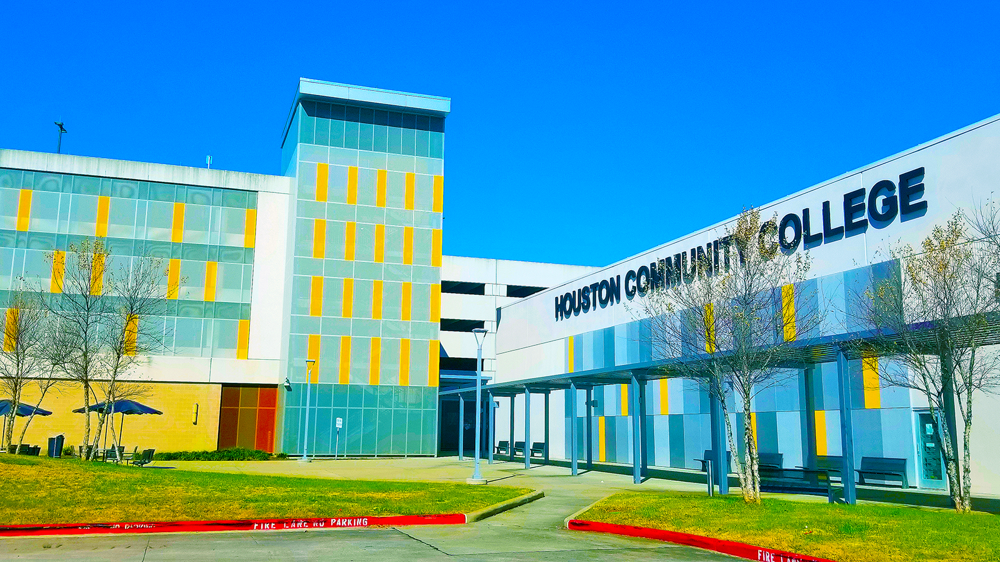
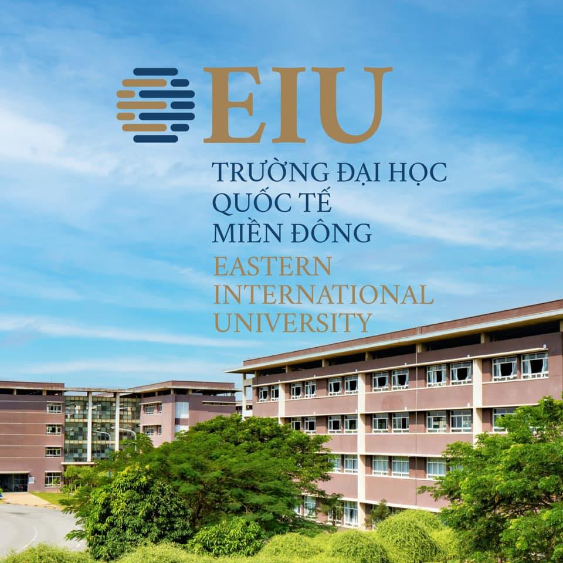

Project
I have brought here my biggest and favorite works as a professional.
-
Master Degree of Computer Science
The University of Texas at Dallas
I am thrilled to share that I will be embarking on a new chapter in my academic journey as a master's student in Computer Science at the University of Texas at Dallas starting next semester. This opportunity to further my education and delve deeper into the fascinating world of computer science fills me with excitement and anticipation. I am eager to explore advanced topics, engage in cutting-edge research, and collaborate with brilliant minds in the field. Pursuing a master's degree will not only expand my knowledge and skills but also open up new doors for personal and professional growth.
-
Bachelor's Degree of Computer Science
The University of Texas at DallasAs a senior Computer Science major at the University of Texas at Dallas, I am amazed at how quickly time has passed. I am on track to graduate in December 2024 and feel incredibly grateful for the remarkable projects and connections UTD has provided me. I am eager to leverage these valuable resources as I progress in my career journey. However, alongside this excitement, I must admit that a sense of nervousness is gradually setting in as job application deadlines approach. I would be immensely appreciative if you could refer me to any of your connections or contacts who are actively seeking candidates, as I am diligently searching for opportunities to launch my professional career upon graduation.
-
Associate Degree of Computer Science
Houston Community College Before pursuing my bachelor's degree at the University of Texas at Dallas, I completed my associate degree in Computer Science at Houston Community College. The dedicated faculty, diverse curriculum, and hands-on projects at HCC provided me with a strong foundation in computer science fundamentals. I am grateful for the opportunity HCC gave me to explore my passion for technology and develop the necessary skills to succeed. The invaluable lessons and memories from my associate degree program continue to shape my academic journey and future career prospects as I now pursue my bachelor's degree at UT Dallas.
-
Bachelor's Degree of Business Administration
Eastern International University - Vietnam My time pursuing a Bachelor's degree in Business Administration at Eastern International University in Vietnam was transformative. Although I couldn't complete the degree due to moving to the US, the knowledge and skills I acquired at EIU have been invaluable. The diverse student body, dedicated faculty, and comprehensive curriculum provided a solid foundation in various aspects of business. The practical projects and assignments helped develop my critical thinking, problem-solving, and teamwork skills. Despite my journey at EIU being cut short, I am grateful for the opportunities it provided and how it prepared me to start anew in the United States, building upon the experiences gained in Vietnam.